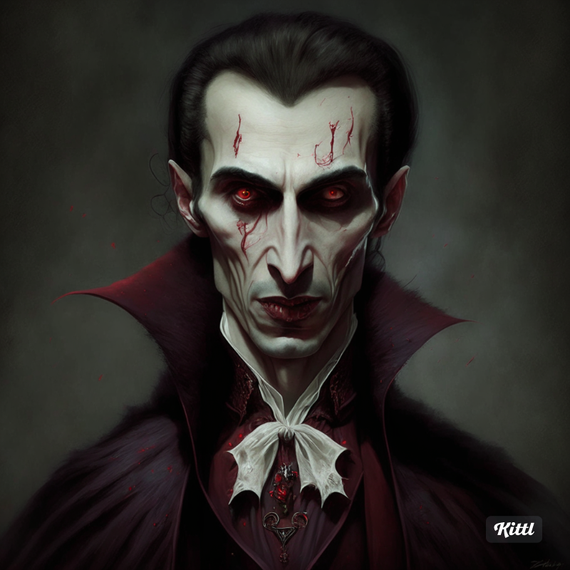

Introducción
Drácula es una novela de terror gótico publicada en 1897 por el autor irlandés Bram Stoker. La novela narra la historia del conde Drácula y su intento de mudarse de Transilvania a Inglaterra para expandir la plaga de los no-muertos.
Historia
La historia de Drácula comienza con el joven abogado Jonathan Harker que viaja a Transilvania para asistir al conde Drácula con la compra de una propiedad en Inglaterra. Pronto descubre que Drácula es un vampiro, y lucha para escapar de su castillo y advertir a sus amigos en Inglaterra.
A medida que la historia avanza, los amigos de Jonathan, incluyendo a su prometida Mina, el Dr. Seward, y otros, se ven envueltos en una lucha contra Drácula para detener su maligna influencia y proteger a sus seres queridos.
Mitología
La figura de Drácula se basa en diversas leyendas y mitos europeos sobre los vampiros. Drácula es capaz de transformarse en un murciélago, lobo, y niebla. También tiene la capacidad de controlar animales nocturnos y sufre debilidades como la luz del sol, el ajo y las estacas de madera.
- Transformación en criaturas nocturnas
- Control de animales
- Debilidad a la luz del sol
- Vulnerabilidad al ajo y las estacas
Autor
Bram Stoker nació en Dublín, Irlanda, en 1847. Trabajó como administrador del famoso Lyceum Theatre en Londres y escribió numerosas novelas y cuentos. Sin embargo, es más conocido por su obra maestra, Drácula.
Stoker se inspiró en las leyendas de Europa del Este sobre vampiros y en el personaje histórico de Vlad el Empalador para crear su icónico personaje.